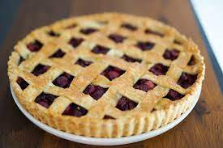

Tarte

Les meilleures tartes !
Une delicieuse recette de tarte aux cerises a l'ancienne
Ingredients
- Beurre
- Farine
- Oeufs
- Lait
- Sucre
- Cerises
Steps
- Faire fondre le beurre
- Mélanger la farine, le beurre et les oeufs
- Ajouter le sucre
- Faire cuire au four à 200 degrés pendant 20 minutes
- Voilà !